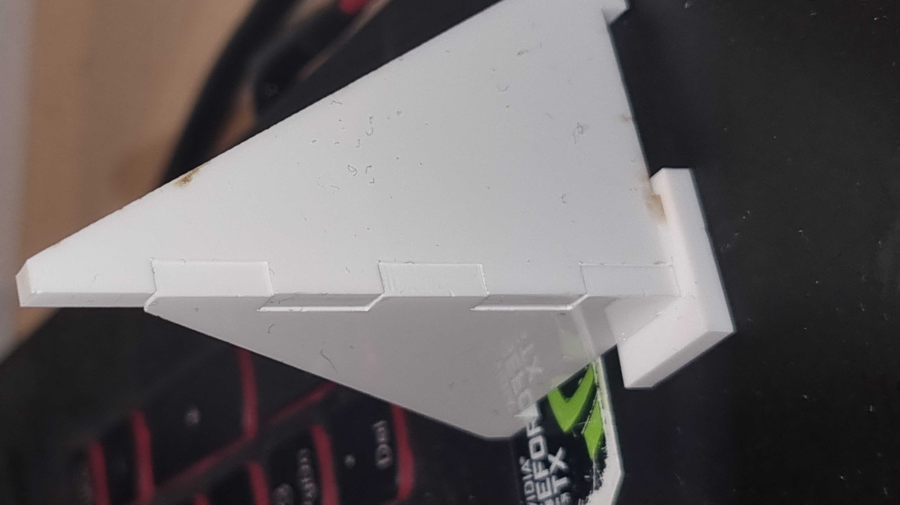

Box
Endar Gerð
Hönnunarferli
Fyrst var Downloadað Autodesk Fusion 360 á heimasíðu þeirra. Svo fór ég á Youtube og horfði á nokkur myndbönd um fusion-360 til að læra hvernig ég ætti að teikna.
Ég fékk hugmyndina um að gera þetta skartgripa box fá stjúp pappa mínum þegar hann var að útskýra mismunandi geirneglda festi punkta.
Ég notaði þetta myndband til að byrja á skatgripa boxinu
Reynsla 1
Þegar ég byrjaði að teikna notaði ég parametrískta aðferð og náði að teikna botnin, en þegar ég teiknaði veggina lenti ég í vandamáli
með tengingu á veggjunum
, ég lærði að vandamálið væri að ég gerði hlutinn veggina og langa og sem "Body 1" í
staðin fyrir marga "Body" sem gerði það erfit að laga vandamálið og ég áhvað að byrja aftur því kennarinn sagði að maður ætti að vera hræddur um að
byrja aftur. (Sem er mikið þæginlegra en að reyna að laga vandamálið). Ég lagaði vandamálið með að extrude allt sem sér "Body".
Reynsa 2
Í næstu tilraun ætlaði ég að nota teikna sketches á Body og svo nota extrude og cut til að skera út teikninguna og nota svo combine til að sameina bitana til að gæta þess að
það séu ekki allir Bodys að sameinast með combine. Það kom upp vandamál með breytinguar á parametrískta kerfinu þannig að extrudeinn voru ekki að breytast rétt.
 Leiðin til að laga þetta var að gera hvern bita sem sit eigið sketches en ég fataði það ekki strax og gerði sömu mistökinn í tilraun 3.
Leiðin til að laga þetta var að gera hvern bita sem sit eigið sketches en ég fataði það ekki strax og gerði sömu mistökinn í tilraun 3.
Reynsla 3
Í þriðju tilraun teiknaði ég alla bitana sem ferkantaðar flatarplötur og bjó til components púslukubbana sem voru svo sameinaðir við plöturnar með combine. Vandamálið í þessu
var að þegar ég breiti hæð boxsins út 60mm í 100mm brotnuðu af bitað sem höfðu verið tengdir við plöturnar.
Verður að ->
Til að laga þetta vandamál þurfti ég að hafa bitana sem partur af sketchinu, sem ég gerði í næstu tilraun.
Reynsla 4
Í fjórðu tilraun gerði ég sketch teikningarnar rétt en því miður crashaði fusion-360 og ég missti teikningarnar. Og ég byrjaði upp á nýtt.
Þetta er mynd af því sem ég tölvan náði að recovera.
Það sérst að þetta er ekki teiknað á offset plain. Þannig ég áhvað að bæta það í næstu teikningu.
Reynsla 5
Í þetta skipti áhvað ég að gera offset plain og hafa staðsetninguna þeirra tengda við parametrískta lengd þannig þau færast með t.d. hæð, lengd, breidd og offset.
En tvö af stærstu vandamálunum í þessu verkefni var að gera tilraun 5, fyrst vandamálið sem ég lenti í var að reyna gera formúluna ( breidd - offset * 2 - lengd_fingur * 4 ) / 3.
Það er engin sérstök ástæða afhverju en ég naði ekki að setja hana saman í höfðinu og það tók tíma að ná henni rétt.
Seinna vandamálið var að tengt þessari línu , þessi lína var vandamál því að þegar efnisþykktinn = offset/2 það varð lengd hennar 0 og teikninginn gat því ekki breytt efnisþykktinni í t.d. 4mm ef offsetið var 8mm. Til að laga þetta byrjaði ég að teikna línu frá enda kubbsins sem er fingur_lengd (6mm). og skrifaði formúluna (fingur_lengd+offset/2-efnisþykkt) þanning svarið væri ekki 0mm nem maður eyddi fingur_lengd.
Reynsla 6
Það eru engin vandamál í loka, það er hægt að breita öllum parametrískum tölum án þess að teikningin brotni.
->Þannig kláraði ég fusion-360 hlutan.
File til að prenta
Eftir þetta þurfti ég að setja alla bitana á sama plain. Hér er Youtube myndband.
Eftir það fór ég í Manufacture
og valdi Setup->Machine. Það var gert laser með karf=0.1667mm.
Svo var farið í PostProcess
Eftir það var valið simulate og þá var ég komin með tilbúið Html file.
Inkscape
Í Inkscape notaði ég ctrl + delete til að eyða línum sem ég notaði til að læsa staðsetningu sketch 1-8 í fusion-360.
Svo notaði ég Node tool.
Eftir prentun
Fyrsta prufa
Til að prufa stærðirnar prentaði ég út partana me væru mestu vandamál að ná rétt.
Það sést hér að efnisþykktinn hafði ekki verið hugsað um í stærðarvali á Inkscape og að ekki hafi verið hugsað um karf stærð því ég þurfti að halda hlutnum saman til að ná mynd.
Eftir að breyta stæðunum í Inkscape náði ég að gera prufubita sem passaði
Seinni mistök
Seinni mistökinn mín vöru að 2 bitar voru ekki í réttari stærð á Inkscape og possuðu því ekki.
Botn flöturinn hafið eina lengd rétt (hæð) en ekki hina (width) í Inkscape.
Hinn hluturinn var lokið (þakk boxsins), það passaði ekki inn í þakk lásinn.
Þannig ég þurfti að skera þessa 3 bita aftur því 2 þeirra (hægri og vinstri) voru ekki í réttari stærð og ég braut hinn (miðjan):
Þriðju mistök
Þegar ég skar út bitana þá gleymdi ég að taka miðana af plastinu og ég held það sé ástæðan afhverju einn partur af botninum var ekki skörinn í geng og ég þurfti að notað hníf til að skera hann út.
Fjórðu mistök
Þriðju mistökinn mín er að ég braut báða þakk lása þegar ég var að þúsla saman bitunum.
Ein þeira er vitlaus stærð en hinn er skörinn út rétt. Ég myndi kalla þetta hönnunargalla því hlurutinn á ekki að geta brotnað svona auðveldlega þegar maður íttir niður á hann.
Loka gerð
Þetta verkefni tók mjög mikin tíma því ég lenti í miklum vandamálum með fusion-360 og á læra á parametrískta hönnun.
| Tími | |
|---|---|
| fusion-360 | 36 Klst |
| Inkscape | 3 Klst |
| Laser Skerari | 40 min |
| Forritun blaðsíðu á vefsíðu | 8 klst |
| Heldartími | 47 klst og 40 min |